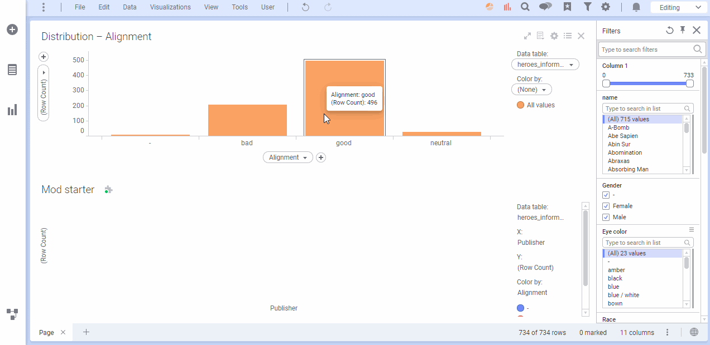
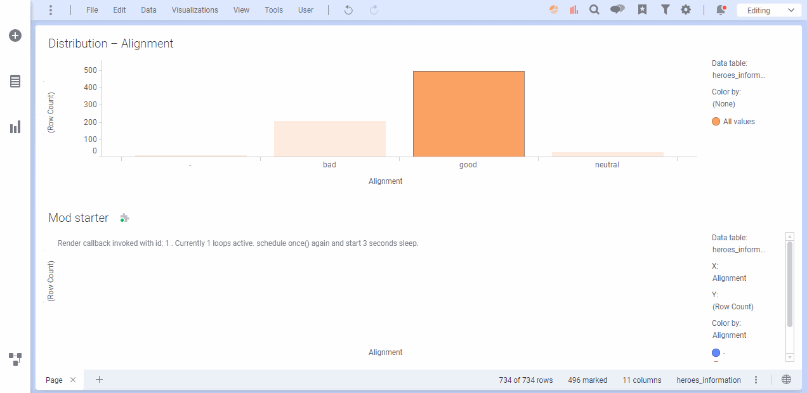

Reading time: 6 minutes and 45 seconds.
Working with mod readers
The Spotfire Mod API exposes a set of Readables, such as the DataView and properties. These can be consumed by a Reader in order to read their values and subscribe to changes.
mod.createReader(mod.property("myProperty"), mod.windowSize());
Introduction
The aim of a reader is to simplify the synchronization of reading related values. An example is a visualization that depends on the window’s size and the dataview. When one of the two changes, the visualization needs to be redrawn. The reader fetches new values and keeps unchanged values in memory.
The API exposes readables for the Data, Properties, Document Properties, Pages, Window size, Axes, Tables and Columns.
Methods
A reader has three methods; subscribe, once and hasExpired.
subscribe(callback)
Subscribe will be the most common way to work with readables. It sets up a subscription to new changes of the readables provided to the reader. When one or more readables gets updated on the server, the reader fetch all new values and invoke the provided callback with updated values.
The reader will only allow one subscribe callback to be active at a time. This means that the callback will finish executing before a new callback is scheduled. The following example shows how the callback will not be invoked again until its returning promise has settled. Even if the dataView is changed by marking or filtering. After the callback has finished executing, the callback is invoked again if there are any changed values. The hasExpired method can be used to check whether any readables have been invalidated while the callback has been executing.
const reader = mod.createReader(mod.visualization.data());
reader.subscribe(async function render(dataView) {
log(
"Subscribe callback invoked, ",
(await dataView.allRows()).length,
" rows. Start 3 seconds sleep."
);
await sleep(3000);
log(
"Render callback finished.",
"Has the reader while the callback was executed: ",
await reader.hasExpired()
);
});

once(callback)
When a developer wants to control the pace of updates, the once method can be used to wait for changes. Once will invoke its provided callback a single time, when one or more of the provided readables have changed.
let loopsRunning = 0;
let count = 0;
const reader = mod.createReader(mod.visualization.data());
reader.once(async function render(dataView) {
loopsRunning++;
let id = ++count;
await dataView.allRows();
log(
"Render callback invoked with id: " + id,
". Currently " + loopsRunning + " loops active.",
"schedule once() again and start 3 seconds sleep."
);
reader.once(render);
await sleep(3000);
log("Render callback finished with id:" + id);
loopsRunning--;
});

hasExpired()
The reader keeps track of whether its readables are up to date or not. The hasExpired method can be invoked if you want to check whether all fetched values are up to date. This can be useful if your rendering loop takes a long time to complete and you want to quickly respond to changes.
The following example shows how a reader becomes expired after a mod property has been modified.
const reader = mod.createReader(mod.property("myProperty"));
reader.once(async function render(prop) {
log("Render callback invoked ", prop.value());
mod.transaction(
() => {
prop.set("next value" + Math.random());
},
async () => {
log(
"Transaction complete. Reader has expired: ",
await reader.hasExpired()
);
}
);
log("End of callback. Reader has expired: ", await reader.hasExpired());
});
In this example the slow render loop is synthesized through a set of sleeps. Each time the mod is clicked, a mod property is updated and trigger a render loop. Since subscribe will only invoke the callback after it has finished, the hasExpired method can be used to trigger an early return of the render callback.
const reader = mod.createReader(mod.property("myProperty"));
document.body.onclick = () => {
log("Set new value for myProperty ");
mod.property("myProperty").set("next value" + Math.random());
};
reader.subscribe(async function slowRender(prop) {
log("Slow render started ", prop.value());
await sleep(3000);
if (await reader.hasExpired()) {
log("Reader has expired, return early to enter new loop");
return;
}
await sleep(3000);
log("End of slow rendering");
});
function sleep(ms) {
return new Promise((res) => setTimeout(res, ms));
}
function log(...messages) {
let div = document.createElement("div");
div.textContent = messages.join(" ");
document.body.appendChild(div);
div.scrollIntoView();
}
Guidance on how to use readers
-
If two or more
readablesdepend on each other, they should be part of the samereader. Separatingreadersfrom a performance concern is often a pre-optimization. Thereaderis keeping unchanged values in memory and only changed values are fetched. If there is a performance concern it can be better to check which value has changed through reference equality with the previous value. -
If you need an initial setup, this can be done in a
oncecallback, followed by setting up asubscribecallback. -
Use
hasExpired()when your render loop takes a long time, in order to respond quicker to changes.
Separating initial setup from updates
If a mod needs some initial setup before starting to listen for changes, reader.once can be used with a setup callback.
A reader will only trigger a new callback if any of its Readables has changed since it was last part of a reader callback. That means we can separate the setup from upcoming updates without triggering unnecessary callbacks.
In the following example, there are three Readables. They are first read together in an initial once callback as a setup for the mod. They are afterwards separated into two readers, one for the property and one for the rendering loop. Neither of the subscription callbacks will be invoked immediately. Instead they will wait until one of the readables change.
const setupReader = mod.createReader(
mod.visualization.data(),
mod.windowSize(),
mod.property("myProperty")
);
setupReader.once((dv, size, prop) => {
log("All values are read", prop.value());
const propertyReader = mod.createReader(mod.property("myProperty"));
propertyReader.subscribe((myProperty) => {
log("Property has changed to", myProperty.value());
});
const renderReader = mod.createReader(
mod.visualization.data(),
mod.windowSize()
);
renderReader.subscribe(async function render(dataView, windowSize) {
log(
"Render",
(await dataView.allRows()).length,
windowSize.height
);
});
setInterval(() => prop.set("New value" + Math.random()), 2000);
});
A readable can only be part of one reader at a time. subscribe and once will not invoke the callback until the readable changes
Knowing what changed
Sometimes you want to know what changed inside of a subscribe callback, often in order to improve the performance of the mod.
- Reference equality
- Unchanged values are reused.
Note. It might be an unnecessary sub optimization to check for changes.
let reader = readerWithChangeChecker(
mod.createReader(
mod.visualization.data(),
mod.windowSize(),
mod.property("myProperty")
)
);
reader.subscribe(async (dataview, size, prop) => {
console.log("Dataview", reader.hasValueChanged(dataview));
console.log("size", reader.hasValueChanged(size));
console.log("property", reader.hasValueChanged(prop));
await dataview.allRows();
setTimeout(() => prop.set("New value" + Math.random()), 2000);
});
/**
* Wrap a reader with an additional method called `hasChanged`.
* It allows you to check whether a value is new or unchanged since the last time the subscribe loop was called.
* @function
* @template A
* @param {A} reader
* @returns {A & {hasValueChanged(value: any):boolean}}
*/
function readerWithChangeChecker(reader) {
let previousValues = [];
let currentValues = [];
function compareWithPreviousValues(cb) {
return function compareWithPreviousValues(...values) {
previousValues = currentValues;
currentValues = values;
return cb(...values);
};
}
return {
...reader,
subscribe(cb) {
// @ts-ignore
reader.subscribe(compareWithPreviousValues(cb));
},
hasValueChanged(value) {
return previousValues.indexOf(value) == -1;
}
};
}
Readables
Every set of data that can be consumed through the Mod API is encapsulated in a Readable. A Readable can be seen as a Promise combined with an identifier. In contrast to Promises, which are eager, Readables are lazy. It is lazy because it does not immediately start fetching its promised value. It only fetches the value it encapsulates if it is awaited or the then method is invoked.
// This does not fetch any value from the server
const myPropertyReadable = mod.property("myProperty");
console.log(myPropertyReadable);
// This fetches the latest value from the server.
const myProperty = await mod.property("myProperty");
console.log(myProperty);
ReadableProxy
If a value has synchronous methods, e.g a mod property, a ReadableProxy will be returned from the API instead of a Readable. The ReadableProxy is a Readable augmented with all synchronous methods of the encapsulated value, without the need to await the encapuslated value. This means a property can be set, without knowing its value.
In the following example the mod property myProperty is modified without awaiting its encapsulated value.
mod.property("myProperty").set("new value");
ReadableProxyaugment aReadable/Promisewith additional methods.- Methods are accessible without awaiting the
Readable. - Value can be awaited. Will always fetch the latest up to date value.
- Modifications should be done on user interaction, not directly in a
readercallback.
Full examples
All examples can bee downloaded here. They can be tested with one of the existing examples, such as the js-dev-starter.
Feedback
Was this page helpful?
Glad to hear it! Please tell us how we can improve.
Sorry to hear that. Please tell us how we can improve.